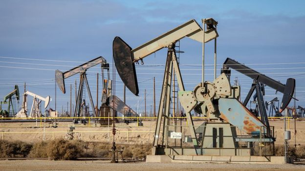

Por qué el petróleo tocó su piso histórico y qué significó que cotizó debajo de cero
El colapso de la actividad económica por la pandemia, la guerra de precios entre Arabia y Rusia y el agotamiento de la capacidad de almacenamiento confluyen en una coyuntura sin precedentes.
No lo quieren ni regalado.
El petróleo estadounidense West Texas Intermediate (WTI) para entrega en mayo sufrió el lunes 20 de abril una caída tan estrepitosa que pasó de cotizarse a US$18 por barril al inicio del día a un precio negativo de US$ -35,22 al cierre de dicha jornada, volviendo a cotizar en positivo el martes 21 de abril para los contratos futuros de entrega en junio, el nuevo mes de referencia.
Lo sucedido el lunes supuso que, por primera vez en la historia, este crudo estadounidense de referencia para los mercados se cotizó a un valor negativo, generando gran conmoción en el mercado energético.
El desplome refleja las dificultades que ha estado experimentando el negocio petrolero mundial debido al exceso de producción y al frenazo de la demanda como consecuencia de la pandemia de coronavirus.

En esta seccion se explicaran 3 razones causantes de este desplome y como puede afectar a America Latina.
1. Backwardation
Uno de los elementos que jugó un papel más destacado en lo ocurrido con el WTI este lunes tiene que ver con que este martes culmina en Estados Unidos el plazo para el cierre de los contratos de petróleo para entrega en mayo.
Eso quiere decir que, para entonces, quien tenga vigente un contrato de este tipo tendrá que honrarlo y hacerse cargo del crudo que le entregarán el próximo mes.
"Ellos no tienen dónde vender ese petróleo y, ante la caída de los precios, el costo de almacenarlo terminaría siendo más alto que el propio precio del petróleo, por lo que están dispuestos a pagar para que no les entreguen ese crudo", señala el economista petrolero José Toro Hardy, quien fue miembro de la junta directiva de la estatal venezolana PDVSA.
El experto explica que en estos momentos los compradores creen que se vive una situación conocida como "Backwardation", lo que quiere decir que los precios en el futuro inmediato van a ser más bajos que los actuales lo que elimina todo incentivo de compra en ese momento.
2. Los depósitos en Cushing
El segundo elemento que incidió en el desplome del WTI tiene que ver con que la capacidad física de almacenamiento de crudo en Estados Unidos está bastante reducida debido a la acumulación de inventarios.
Quienes negocian con petróleo en Estados Unidos suelen guardar el crudo que adquieren en depósitos ubicados en la localidad de Cushing (Oklahoma) para sacarlo luego a la venta cuando surgen en los mercados a futuro precios más altos.
Sin embargo, la capacidad de almacenamiento allí parece estar llegando a su tope a gran velocidad.
Citando un informe de la consultora Genscape, analistas petroleros indicaron que los inventarios en Cushing crecieron 9% en la semana que culminó el pasado 17 de abril.
"La capacidad de almacenamiento está demasiado limitada como para que los especuladores quieran comprar esos contratos y las refinerías están procesando poco porque en la mayor parte de los estados (de Estados Unidos) se mantienen las órdenes de confinamiento", señaló Phil Flynn, analista de Price Futures Group, a la agencia Reuters.
Así, mientras más llenos están los tanques y menos perspectivas hay de un aumento de precios, conservar los contratos de futuro para WTI significaba para muchos compradores sumar pérdidas y dolores de cabeza.
3. Un mercado saturado y sin demanda
La acumulación de inventarios y la caída de los precios del crudo son, a su vez, consecuencia de la deriva que en los últimos meses ha tomado el mercado petrolero mundial golpeado por el doble efecto de un exceso de producción y de un frenazo de la demanda.
Desde inicios del año, los precios del petróleo venían descendiendo como consecuencia de un exceso de producción y de la caída de la demanda en China, que tuvo que ralentizar su actividad económica para hacer frente a la crisis del coronavirus.
Esta situación se agravó en marzo, cuando Rusia se negó a acceder a una propuesta de Arabia Saudita en el marco del grupo conocido como OPEP+ (conformado por los países de la OPEP más otros productores no miembros) para reducir la producción en 1,5 millones de barriles al día para intentar apuntalar los precios.
Tras el fracaso de esas negociaciones, Riad inició una guerra de precios contra Moscú y anunció un aumento de su producción.
Luego de una mediación del gobierno de Donald Trump, el pasado 12 de abril los países de OPEP+ acordaron reducir en 10% la producción mundial de crudo a partir del 1 de mayo.
Este recorte enorme -estimado en unos 9,6 millones de barriles diarios- corre el riesgo de llegar tarde y de ser insuficiente para la situación actual del mercado, según muchos analistas, pues es claramente menor que la caída de la demanda que se ha producido en torno a 30%.
"En este momento, prácticamente todo el planeta está en cuarentena. No hay consumo de gasolina en los autos, en los aviones, en los buques. La caída de la demanda ha sido tan brusca que se presentan distorsiones muy fuertes", señala Toro Hardy, al apuntar que tras los confinamientos en China, la epidemia de coronavirus llevó también a la paralización de Europa y Estados Unidos, grandes consumidores de petróleo.
¿Cómo afectará a los países de América Latina?
La caída de los precios del petróleo suele ser una noticia bien recibida en los países consumidores y un motivo de preocupación para los productores.
En el caso de América Latina, Toro Hardy señala que el país más golpeado será Venezuela, aunque también impactará en Colombia, México y Brasil.
Destaca que Venezuela se encuentra duramente afectada en los dos elementos que determinan su ingreso petrolero. "Si la producción ha caído como lo ha hecho en los últimos tiempos y el precio también, la situación se hace inmanejable", apunta.
Guillermo Olmo, corresponsal de BBC Mundo en Venezuela, subraya que a estos factores se suma el efecto de las sanciones de Estados Unidos sobre la actividad petrolera venezolana.
"Para convencer a potenciales compradores temerosos de ser sancionados, la petrolera estatal venezolana, PDVSA se está viendo obligada a ofrecer enormes descuentos y fuentes del sector aseguran que su barril de crudo pesado se vende ya a no más de US$6. Puede que ni siquiera esos descuentos sean incentivo suficiente en el contexto actual, con un mercado saturado de crudo barato", afirma.
En México, su mezcla nacional de exportación siguió los pasos del petróleo de EE.UU. y cayó en picado desde los US$14,35 por barril del viernes hasta un estrepitoso US$-2,37 marcado este lunes.
Está por ver cuál es su impacto real sobre la economía de México, dado que la actividad petrolera ha ido perdiendo relevancia en el país hasta no suponer en la actualidad más del 4% de su Producto Interior Bruto, la mitad que hace una década.
En cuanto a Colombia, este país destinó grandes esfuerzos durante la última a aumentar su producción petrolera hasta convertirse en un importante exportador en la región.
"Ahora esto le empieza a pesar al país, porque la mitad de sus ingresos en divisas provienen del petróleo. Durante el último mes el peso colombiano ha perdido 15% de su valor, lo que se puede traducir en inflación, déficit comercial y fiscal y, como ya anticiparon órganos especializados, una recesión", afirma Daniel Pardo, corresponsal de BBC Mundo en Bogotá.
Brasil, por su parte, que justo en 2019 rompió su récord de producción al extraer más de 1.000 millones de barriles durante ese lapso, ya había anunciado a inicios de abril un recorte de producción de 200.000 barriles diarios para hacer frente a la caída de la demanda.
Sin embargo, no todo son malas noticias. Ecuador, otro de los productores de crudo de la región, informó que valora la posibilidad de aprovechar la caída de los precios para eliminar los subsidios al combustible que le cuestan al gobierno mucho dinero cada año.